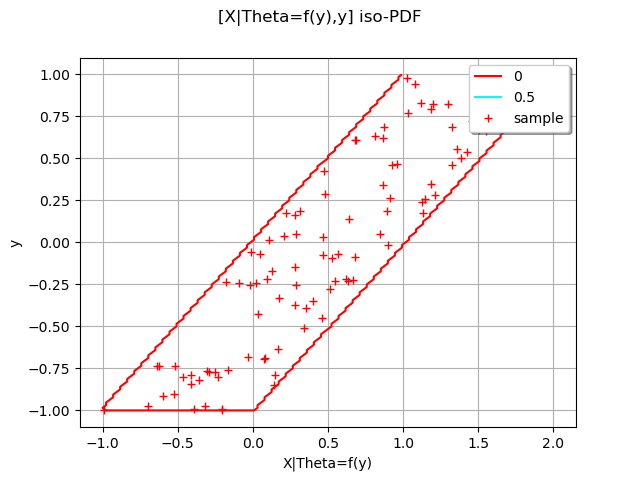

Note
Go to the end to download the full example code
Create a Bayes distribution¶
In this example we are going to build the distribution of the random vector

with X conditioned by the random variable Theta obtained with the random variable Y through a function f

import openturns as ot
import openturns.viewer as viewer
from matplotlib import pylab as plt
ot.Log.Show(ot.Log.NONE)
create the Y distribution
YDist = ot.Uniform(-1.0, 1.0)
create Theta=f(y)
f = ot.SymbolicFunction(["y"], ["y", "1 + y"])
create the X|Theta distribution
XgivenThetaDist = ot.Uniform()
create the distribution
XDist = ot.BayesDistribution(XgivenThetaDist, YDist, f)
XDist.setDescription(["X|Theta=f(y)", "y"])
XDist
Get a sample
sample = XDist.getSample(100)
draw PDF
graph = XDist.drawPDF()
cloud = ot.Cloud(sample)
cloud.setColor("red")
cloud.setLegend("sample")
graph.add(cloud)
view = viewer.View(graph)
plt.show()
